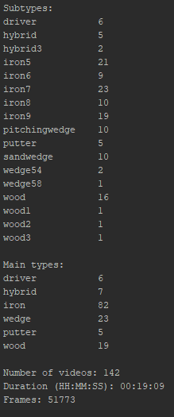
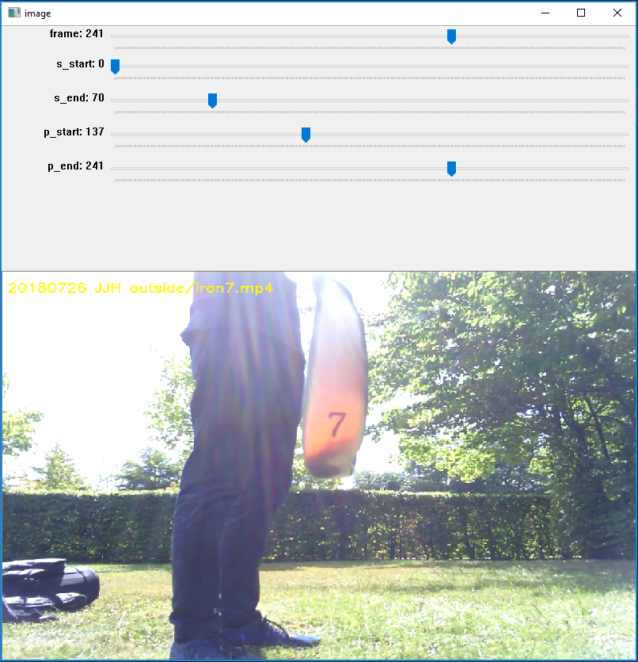
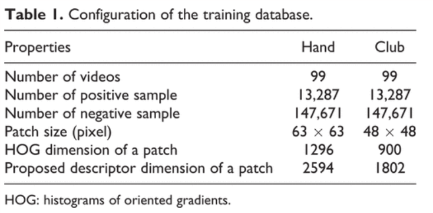
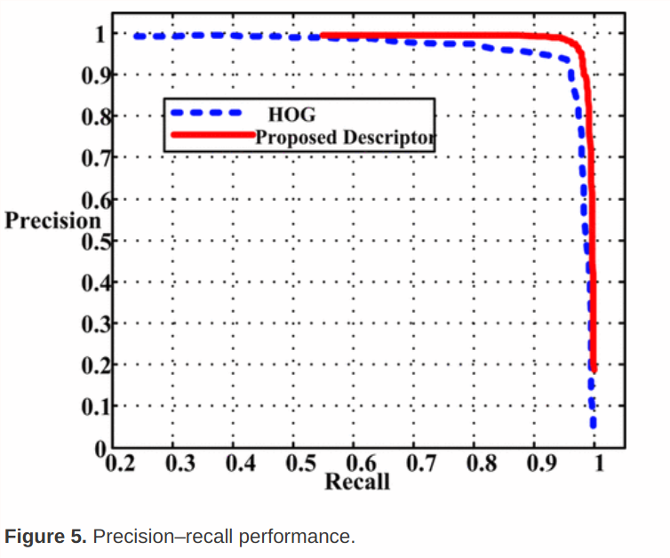
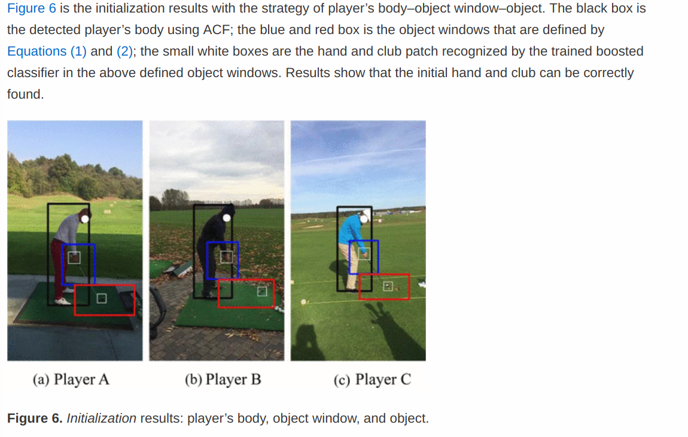
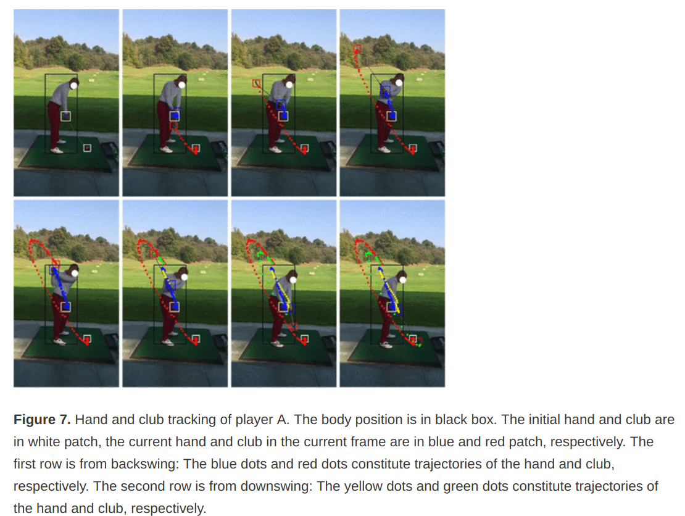

Currently we have 142 videos, with a total duration of 19 mins

More videos are set to come in from the sellers during the next two weeks. I have created scripts for renaming the video files and collecting stats. A script for extracting frames has been made but need to be customized to choose specific part of frames.
Get set up with the new space
script for renaming videos
script to collect stats about videos
Updated data collection guide and youtube video https://www.youtube.com/watch?v=1Ltk6quUXYg&vq=hd1080
Finish data recording guide and sent out to sellers so that we can collect data.
Create an annotation tool for annotating events (set of frames) in videos 
Setup Citation / References environment (Zotero)
Read Trackman Intro Documents
Setup Microsoft Teams
Find title for project
Golf club detection and identification using deep learning on embedded devices
Try out BeaverDam annotation software
Load club data into beaverdam and setup scripts locally
USB-C Dock and Screens
literature review
...
BeaverDam: Video Annotation Tool for Computer Vision Training Labels: https://www2.eecs.berkeley.edu/Pubs/TechRpts/2016/EECS-2016-193.pdf
Visual Golf Club Tracking, Nicholas Gehrig et. al
Golf video tracking based on recognition with HOG and spatial–temporal vector: http://journals.sagepub.com/doi/full/10.1177/1729881417704544, Li Weixian et. al
Good performance for a low number of videos. Has a quite different angle than the videos in our project and is more focues on the swing rather than the presentaton of the club.
Algorithm:
Body detection (bounding box using Dollar et al)
Get Rect for hand and club in initial position from body position (estimated from experience)
Run object detetion in this frame:
Training is using adaptive boosting algorithm in OpenCV




Since our golf video database is not large enough, the popular deep learning has not been applied in our framework. In the future, as we get more videos, more work can be done to further improve tracking performance with deep learning when videos are shot in the night, in the overcast day, or in other bad situations.
Data should be coming in, so need to set up last part of the framework for processing the incomming data. Also have to get a better overview of literature which will partly be done tomorrow (Friday) when I´m not at trackman.
Look into docker
Annotate bounding box of the frames
Figure out which computer to use for DL applications
Sign contract
Figure out how to group the clubs into classification categories
Script for extracting frames at specific points of the video
BeaverDam:
Annotation guide
Fix ID's
Deploy on network?
Get bounding box information